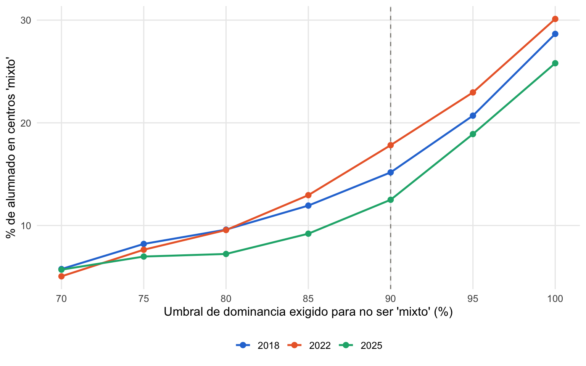

| Distribución de la dominancia lingüística por colegio | |||||||||
| Edición | Colegios | % colegios 100% homogéneos | % con < 10 alumnos evaluados |
Percentiles de % de dominancia del idioma mayoritario
|
|||||
|---|---|---|---|---|---|---|---|---|---|
| P10 | P25 | Mediana | P75 | P90 | Mínimo | ||||
| 2018 | 393 | 73.3 | 4.1 | 82.2 | 97.4 | 100 | 100 | 100 | 51.2 |
| 2022 | 363 | 72.2 | 2.5 | 82.1 | 97.1 | 100 | 100 | 100 | 51.5 |
| 2025 | 333 | 74.5 | 3.6 | 86.2 | 97.5 | 100 | 100 | 100 | 50.0 |
4 Métodos
4.1 Modelo MAIHDA
Modelo mixto multinivel bayesiano (INLA), con lectura/matemáticas/ ciencias como respuesta multivariante correlacionada a nivel de estrato interseccional.
Estrato interseccional de 5 dimensiones: género × educación parental × cuartil ESCS × origen migrante × congruencia lingüística (2 × 3 × 4 × 3 × 2 = 144 estratos posibles) – a diferencia de los proyectos hermanos (4 dimensiones, 72 estratos), aquí la congruencia lingüística se trata como una dimensión más de la posición interseccional del alumnado, no solo como covariable.
4.2 Covariables de nivel colegio
- Especialización lingüística del centro: idioma dominante de examen entre los alumnos evaluados de ese colegio (monolingüe castellano / monolingüe en lengua cooficial / mixto). Ver más abajo cómo se construye exactamente y su robustez frente al umbral elegido.
- Interacción congruencia × especialización del centro: pregunta central del proyecto – si el efecto de la congruencia individual depende del tipo de centro. El coeficiente de interacción por sí solo (
interaccion_lengua_efecto) da el extra de la incongruencia en un colegio “monolingüe cooficial” o “mixto” respecto al monolingüe castellano (nivel de referencia). Para el efecto total de la incongruencia dentro de cada tipo de colegio, el modelo define además combinaciones lineales (inla.make.lincomb()) que suman el coeficiente principal de congruencia + el de interacción correspondiente, con el intervalo de confianza calculado directamente de la posterior conjunta (no sumando a mano los IC de cada coeficiente por separado, que ignoraría su covarianza) – resultado eninteraccion_total_efecto/data/tbl_interaccion_total_efecto.rds. - Público/privado.
4.2.1 Cómo se construye la especialización lingüística del centro
La variable no procede de ningún registro administrativo del proyecto lingüístico del centro. Se calcula, colegio a colegio y edición a edición, a partir del idioma en que cada alumno evaluado por PISA hizo la prueba (LANGTEST_QQQ, sin colapsar – se distingue euskera, catalán, gallego y valenciano, no solo “cooficial”): para cada colegio se identifica qué idioma concentra la mayor proporción de sus alumnos evaluados, y esa proporción (pct_dominante_colegio) es la que decide la categoría, con un umbral del 90%:
- Si el castellano concentra ≥90% del alumnado evaluado del centro → monolingüe castellano.
- Si una lengua cooficial concentra ≥90% → monolingüe cooficial.
- Si ningún idioma alcanza el 90% → mixto.
El umbral del 90% no se fijó de forma arbitraria: antes de construirlo se comprobó que entre el 69% y el 72% de los colegios (según la edición) son completamente homogéneos (100% de sus alumnos evaluados en el mismo idioma), y que la mayoría del resto está muy cerca de esa homogeneidad total, como muestra la Tabla 4.1.
Con una mediana del 100% y un percentil 25 por encima del 96% en las tres ediciones, el umbral del 90% cae en una zona de la distribución con relativamente pocos colegios – no es un corte que divida la masa de colegios por la mitad, sino uno que separa un grupo mayoritario muy homogéneo de una minoría claramente mixta.
4.2.2 Sensibilidad del umbral
Para comprobar que la elección del 90% no determina por sí sola los resultados, se ha recalculado la clasificación con umbrales alternativos, del 70% al 100%. La Figura 4.1 muestra qué porcentaje de alumnado quedaría clasificado como “mixto” según el umbral elegido, en las tres ediciones.

La relación es suave y monótona, sin saltos bruscos alrededor del 90% – moverse un poco en cualquier dirección no cambia cualitativamente el tamaño del grupo “mixto”. Para cuantificarlo directamente: entre el umbral usado (90%) y dos alternativas razonables (80% y 95%), solo cambia de categoría entre un 5% y un 9% de los colegios, que agrupan entre un 5% y un 9% del alumnado, según la edición (Tabla 4.2). La clasificación es razonablemente robusta a esta decisión.
| Colegios que cambiarían de categoría frente al umbral base (90%) | |||||||
| Edición | Umbral alternativo (%) | Colegios que cambian | Colegios totales | % colegios que cambian | Alumnos que cambian | Alumnos totales | % alumnado que cambia |
|---|---|---|---|---|---|---|---|
| 2018 | 80 | 21 | 393 | 5.3 | 688 | 12345 | 5.6 |
| 2022 | 80 | 27 | 363 | 7.4 | 947 | 11463 | 8.3 |
| 2025 | 80 | 18 | 333 | 5.4 | 545 | 10332 | 5.3 |
| 2018 | 95 | 21 | 393 | 5.3 | 682 | 12345 | 5.5 |
| 2022 | 95 | 18 | 363 | 5.0 | 589 | 11463 | 5.1 |
| 2025 | 95 | 21 | 333 | 6.3 | 661 | 10332 | 6.4 |
4.3 Niveles de agrupación
Alumno < colegio < comunidad autónoma (real en 2022/2025; ausente en 2018, ver qmd/02-datos-lengua.qmd).
Ver R/03_model_maihda_inla.R para la especificación completa (mismas opciones de INLA que los proyectos hermanos: estandarización de la puntuación, int.strategy = "eb", extracción de VPC/PCV vía muestreo de marginales), y R/06_sensibilidad_umbral_centro.R para la construcción y el análisis de sensibilidad de la especialización lingüística del centro descritos arriba.